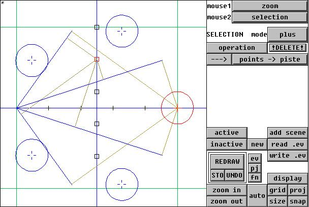
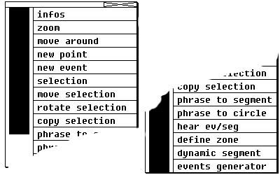
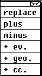
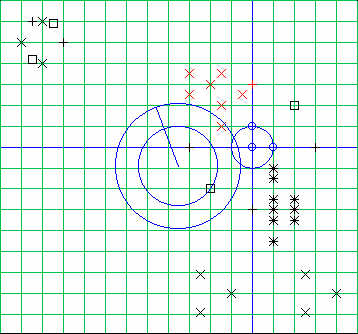
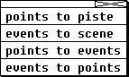
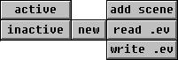
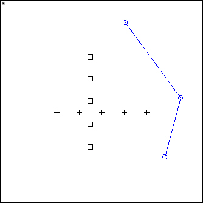
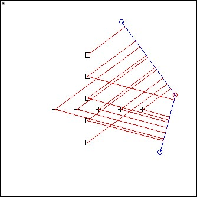
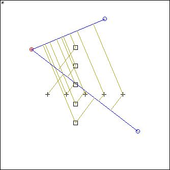

GeoMaestro
Using the graphic tool
presentation
basics
Ev scene management
display options
projections
channels management
Presentation
The graphic tool is implemented in class wev(). The code is stored in the file "winterface.k"
You can make it available in your Tools1 menu by adding this line in your "liblocal/localtools1.lst" file:
NiceTool:wev
... where of course you can replace NiceTool by any name you want (that's the sad truth: this lovely tool has no official name !)
Here is how it looks like:

(The image is clickable: if you click on a button, you will be brought were it's talked about. But this is a presentation better than a reference document, so I strongly recommend that you read at least once everything here from the beginning to the end)
The left area is used to display a part of the event scene, along with an optionnal grid. It can also display any geometrical element you previously defined in a global variable, such as points, segments or circles. And it can also display the geometrical elements associated with a projector (more of this below)
All black symbols are events (red if selected), and each type of symbol refers to a particular channel, at least for the 20 first ones (remember, GeoMaestro channel are not only MIDI channels, so you can have more than 16 ones)
The other objects displayed are not part of the scene. They are here because I used the display button and ask to see them. On this exemple you can see the axes and grid, a few circles and segments and also some lines showing the way two selected events are projected on the segments. See display options for more about that.
The right area can be seen as three functionnal parts: the upper one is always present and is used to select the mouse mode and the selection mode, and also to performs actions on the current selection. The bottom part is also always here; it is used to set the display options. The middle part (just above and right to the REDRAW button) can change, if you click on one of the three smallest buttons; so it as three configurations: one to manage the Ev scene (save or read Ev files, clear everything, activate or inactivate specific events), another one to manipulate projections (pj) and produce phrases or MIDI files, and the last one to set the channels parameters (fn).
Here is the way it looks for the second and third configurations:


Basics
The main operations are made using the mouse. Each mouse button can be affected a mode, using the two upper-right menu button (in the example above they show "zoom" for button 1 and "selection" for button 2)
Here's the menu for mouse modes (the image is clickable):

infos lets you define a rectangular area then print (in the console) a description of all events and points it contains. Note that only active events are displayed (See reference on data structures to see what is an active event. But never mind: if you don't care about that, all events will always stay active !). You can also have info on a circle if its center is in the area.
zoom gets you more or less inside the area you define (rather exactly if you draw a square, otherwise it's ajusted to keep the x/y ratio, so the circles always looks circular). If you simply click once somewhere, this sets the new center of the window. If you click once close enough to a point, a circle center or an event, then the center of the window will be set exactly to the coordinates of that point.
move around lets you do exactly that: move around the scene (get rid of the grid with the grid button if the motion looks ugly)
with new point when you click anywhere in the scene area a window appears and ask for a GLOBAL variable name (a Name, then). If you give one, it will become a new point and will be immediately displayed as a blue circle.
new event does the same with events ! so this time you are asked a nodur (that is: a phrase) and a channel number. You must give both of them in the same line, with a "#" in between. Note that you can give any kind of valid KeyKit formulas as long as the first one returns a phrase value and the second one an integer value (and don't forget the "#" !). So if you want to define a nodur with a complicated definition, just type it in the console and store it into a global variable. You'll just have to give the variable, then (for exemple: Snarf). If you only give a nodur, the channel number will be the current channel (as defined in the fn menu). If you simply type "*", the nodur will be the last chunk in Recorded, as used in the Group Tool, with a 2b space (to have another space value, just enter it, an integer, as the nodur value), and the channel will be the current channel.
selection selected events get red, selected points get red with an inner circle. There are three modes for selecting everything, plus three other modes for selecting only events, or only non-event objects, or only events from the current channel. You choose the one you want from the mode menubutton (in the example image above, it shows "plus"):

... their names say all. Just try and see !
By the way, the !DELETE! button kills the selected events. In the early times, there was no undo, that's why we have "!DELETE!" instead of "delete"... but now you can UNDO the last undoable operation (the console issues a message everytime such an operation is performed), and you an also STOre the current state if you want to be able to go back to it with UNDO (but after coming back once, STOre it again or it will be lost)
move selection: with the mouse you can draw a segment anywhere in the scene area: it represents the vector used for translating the selection. When you stop dragging the mouse, the translation is done.
rotate selection: a bit more complicated, so here is a picture:

...as you can see, there's a blue target-like thingy in the middle of the scene area.
Important: the rotation will be done around the center of the area, so you have to set this center first. To do that, use zoom and simply click once on the point you want to be the area center (you can click anywhere, but if you click close enough to an event or a point, its coordinates will precisely define the new center. Useful to scale circles)
So now you have these two circles: one follows the mouse (its radius change) and the other doesn't change (it was defined when you first clicked somehere). There's also the little segment going from the center to the mouse. When you stop dragging the mouse, the selection is rotated according to the motion of the segment, and it is also scaled according to the difference in radius between the two circles (so that if the last one is inside the first one, it's scaled down). Try it to get the feeling, it's easier to understand than to explain !
For the example above, you would get that in the end:

copy selection works in the same way as move selection, but the selection stays in place and a copy is created according to the vector you draw. Since the selection doesn't change at all, you can use it several times in all directions. If there are points/circles in the selection, you will be asked to give names to their copies (if you give "", the point/circle will not be copied)
While we are on selection stuff, let's talk about the two buttons below the !DELETE! one (we'll go back to the mouse button menu a bit later on):
The "arrow" button is used to transfert selected data from a format to another, and the second button let you choose among different transfert modes:

points to piste: selected points are used to create a piste (that is, an ordered collection of points). You must give a name to the piste. If it is an already existing piste, the new points are added to it. Points are always arranged in the order they got initialized in the tool, so if you want to define a specific order (this is very likely if the piste is going to be used as an argument for a projector call), just use the "display " button once to remove the points from the tool, then use it another time to display them again, and this time type their names in the order you want them to have in the piste.
events to scene: selected events are copied to a new scene, or added to an existing one. You must give a name for the scene. Channel attributes are kept identical, so you may want to change them before (use the "operation" button)
points to events: here we use each selected point as coordinates for a new event. You have to give a channel and a nodur for each newly created event, in the same way as in the "new event" mouse mode.
events to points: here we use the coordinates of each selected event to create a new point. You have to give a name for each new point.
Note that, in both of the previous modes, selected points or events are not deleted. It's more a kind of copy.
Back to the mouse button menu:
phrase to segment: here you can draw a segment, then you are prompted for a phrase and a channel (don't forget the "#" in between !). The phrase will be displayed along the segment, splitted in as many events as there are notes in it, and according to their time values. Note that all notes will become events affected to the channel you gave as argument: their previous channel values are overridden. The non-notes MIDI messages in the phrase are ignored and forgotten. If you give a third argument (after a second "#"), then the length of the segment will be arranged (we only keep the starting point and the direction) so that it's corresponding to the length of the phrase (this depends directly on the value of the global variable CPCM... see the projectors stuff elsewhere in this manual)
Special syntax: type "*" as a phrase to get the last chunk in Recorded (provided that you have Resched == 1). Beware that all nonnotes in it will be forgotten, and that all notes will be affected to the choosen channel.
Note that the segment you just draw with the mouse is stored in the global variable PhS_, so that you can display it or use it as a parameter for a projection. It will be replaced if you do another phrase to segment, so if you intend to use it make a copy at the console ("SegAnyName = PhS_")
phrase to circle: same thing, along a circle. When you draw the circle, the segment starting from the center indicates were will be spotted the first note/event of the phrase. And a third argument makes automatic ajustment of the radius so that the perimeter of the circle is corresponding to the length of the phrase.
The circle is temporarily stored in the global variable PhC_
hear ev/seg sends nodur to midi out; if you click on an event symbol, you'll hear its nodur, if you draw a segment with the mouse you'll hear Ecoute() performed on that segment. The GUI use the temporary global variables Ma and Mb to store the extremities of the segment. So if you liked the sound and want to keep these two points, copy them at the console (type A=Ma; B=Mb for example) BEFORE you use the "hear ev/seg" mode again ! Otherwise this information will be lost.
define zone allows you to draw a rectangular area which will be refered to as a zone. The only interest of zones is to clearly separate different sets of events, which can be useful depending on the way you use GeoMaestro for composition. You are asked for an optional zone number, and any kind of information or name you may want to associate with that zone. If no number is given, one is automatically affected. The zone then appears like a rectangle with a small circle in one corner. If you do an infos request on the circle, the console will display the zone number (useful to know if you didn't give one) along with the info string, and you will be asked weither you want to change the info or keep it as it is.
Displaying zones: µn and -µn shows/hide zone number n, µ and -µ shows/hide all zones
Using zones: you can active/inactive all events in zone n by using the syntax µn as argument for the active/inactive buttons. This allows you to very easily manage independent sets of events in the same Ev scene. It also speeds up projection as you can desactivate events which wouldn't be heard anyway, for example because there are too far away from the supports.
dynamic segment (to do...)
event generator (to do...)
Ok, that's it for the mouse button menu !
There's one important and powerful button we have to see now: the operation button. It only works on the selected (red) events.
It asks for a valid KeyKit formula, evaluate it and redraw the tool. That's it. So it's very powerful, because you can ask for anything and transform the selection in an infinite number of ways.
Syntax: you have to use X_, Y_, C_ and N_ to represent the position, channel and nodur for each events in the selection.
For example, if you give "C_ = 4", all events in the selection will be attributed to channel 4.
Or if you type "Temp = X_; X_ = Y_; Y_= Temp" then the selection will be mirrored along the x=y axis. Etc, etc..
Also, because N_ is representing the nodurs, which are phrases, you can type "N_.vol = 127" to set the velocity of the events. It could be more complicated, like: "N_.vol = 127-10*X_"
And of course you can use all global variables you previously defined.
There's more: it's a bit subtle, but very useful. Here it is:
If what you typed starts with a ":", then what follows will be evaluated once to get the formula to use, then a second time to apply the formula. Get it ?
Use: that's mainly because you may want to do a very complicated operation on the selection. So the best way to do that is to use the console to define a string global variable that will contain the code for the operation. And then you give the name of this variable at the prompt.
Example: in the console, you type:
Formula = "if (C_==4) {X_=X_+1; Y_=0.1*N.dur; transpose(N_,2)} else if (C_==2) transpose(N_,3) else {X_=0; print(Y_) }"
Now if you click on "operation" and, at the prompt, type:
:Formula
... the whole big thing will be evaluated on the selection.
You could actually write whole programs this way. But if that's what you're into, then it's better to have a look at the whole GeoMaestro set of functions and do everything at the console or in a text editor. There's much more to have fun with !
As an application to this feature, there's an history management for the "operation" button:
history is kept in array FKK
:n recalls formula indexed n (it's the same as typing FKK[n] as a formula)
:: recalls the last one
(Note: as for any array, you can edit FKK with the console command Notepad() if you properly set the global variables NOTEPAD1 and NOTEPAD2 which are used to call a text editor from the shell. See installation for details)
Ev scene management
As I said before, three different sets of buttons can appear in the middle section. We are now interested in the firts one, the one you get by clicking on the ev button:

"active" and "inactive" buttons are used to decide which part of the event scene is to be displayed. They ask for a valid KeyKit test on the variables X_,Y_,C_,N_ and S_, in the same principle as the "operation" button. (here, S_ is the selection flag: it's 1 if the event is selected, 0 or "" otherwise)
If you give C_==2 on "inactive", events affected to channel 2 will be removed from the display. They are not deleted, but you can't select them, modify them nor hear them until they're activated again. S_==1 would affect only selected events, (S_==1)&&(C_==2) would affect selected events from channel 2, etc...
As for "operation", there's an history to the "active/inactive" tests: (It is kept in array FIF)
:n recalls test number n (same as typing :FIF[n])
:: recalls the last test
(note that if you want to give as a test a string global variable containing the test itself, you also need a ":" , exactly as the "operation" button syntax. Example: if Test="C_==2", you can give :Test as a parameter)
add scene adds another scene (you have to give its name) to the Ev. There's no difference in structure between a scene and the Ev array (to say it another way, the Ev array is merely a scene); but the Ev scene is the only active scene. Other scenes are simply stored for later recall. To save a scene on a file, you must either make it the current Ev scene (by using the new and the add scene buttons) then use the write .ev button, or directly use the proper command at the console (the command is SaveScene(). See the functions reference for more details)
The new, read .ev and write .ev are self-explanatory. Just have a look at the reference on data structure to understand clearly what are the Ev events. The most important thing is that there's only one scene at a same time in GeoMaestro. You can open many tools, but they will all work on the same scene. Any event selected in one tool will be selected in the others, etc... Note that when a tool is dumped (if you write a page which contains it), the events are dumped with it. So if you're working on several scenes, or with several tools on different pages, be careful when you restore a page: it will erase your current Ev !
Display options
Next: the display button. It asks for names, I mean Names, global variables, separated with commas ",". If they are names of points, circles, segments or pistes, these are displayed. If you give it names of lignes coming from a generator, then the tool looks at the "inter" or "rac" fields to display the appropriate content (See projector and data structure documentations for details).
If you type a "-" just before the name, the element is suppressed from the display.
Ex: "Or" will show the origin, "-Or" will hide it back.
If you type "--", everything disappear !
Exemples of valid command for display:
--, Or, C1 clear everything, then show point Or and circle C1
-Joe, Joe hide Joe, then show Joe gain (whatever is Joe... but I guess it's something which value just changed, so we want to refresh the view)
Now there are two useful special syntaxes:
One is used to display lignes which have just been projected using the tool. You'll see later that these lignes are kept in an ordered list; so to display ligne number n you can use the internal name £n (it is actually a shortcut for the real name RL[n] ), with a special syntax to access internal elements in the lignes: £nc, £na, £nb, £ni... See here for a complete description.
The other one is used to define dynamic segments, that is: segment automatically generated and updated by the tool from two points. Let's say that points A and B are displayed; you can ask to see A-B. Now, if you select A with the mouse then move it somewhere else, you'll see that the segment A-B follows the motion. This is specially useful when used with the proj button (we're going to see that button right now). Note that you can ask A-B-C-D if A, B, C and D are existing points (not necessarily currently displayed, though). You will then have defined the three dynamic segments A-B, B-C and C-D.
Important point here:
When something (point, segment, circle, whatever) is displayed in the GUI, it is always associated to both an internal variable and a global variable. The global variables are the ones displayed in the console when you click on the "display" button. You can use and manipulate these variables at the console in any way you want, but it will not change the value of the internal variable associated to the same object. So what you see in the GUI will not change unless you ask to hide and display again the concerned object, because hiding an object kills its internal implementation. But be careful: on the other way round, any change to an internal variable is immediately repercuted on the corresponding global variable. That's why when you move point A around in the GUI, global variable A follows the motion. So the basic rules are the following:
1) changes in the GUI have priority
2) if you want to change the value of an object at the console, it's safer to hide it from the GUI in the meantime.
Note that this is not true for events ! Events have one and only implementation, weither they appear on the GUI or not: it's the Ev array.
Second important point here:
When you dump a GUI, all its internals are dumped along. So reading a .kp page with a GUI in it restores even the global variables associated to displayed objects. But it does not necessarily restore objects you did not display. To be sure that an object you need or want to use later on is dumped with the tool, you must check that its name is an index of the GVARS array (to do so, the best is to give this command at the console: Notepad(GVARS)). If it is not, use the RemVAR() function to register it. This function is automatically called by the GUI in a number of cases, so don't be surprised to see your object/variable already registered. But don't rely on this and manually register all important data !
Third (less) important point:
Now, concerning the special syntaxes for lignes and dynamic segments. This time, global variables are created to match what's on the sceen, and sometimes you may find them useful to use later on. For example, any ligne created by a projector in the GUI (go here to see how this happens) is stored in the global variable RL, which is an array. Let's say that in the ligne whose RL index number is 5 we're interesting in a certain circle that appears in the "inter" field of the ligne, at index 18. Sounds complicated, but is simple ! (I can't emphasize enough how it's a good idea to use the Notepad() function to have a look at the way big arrays are arranged. In this case, if you have a few lignes stored in your GUI, try Notepad(RL) at the console)
We could display this circle by using its real name, that is: RL[5]["inter"][18]["cer"]
But we could also use the special shortcut: £5i18c
Both give the same result in the GUI: the famous circle is displayed. But as you could see in this example by reading the console messages, the second methods lead to the creation of a new global variable C_5i18c. This defines the very circle displayed on the GUI. As a consequence, you can now kill the ligne number 5 (which means that RL[5] will no longer refers to it) while keeping this circle at your disposal through its new name C_5i18c (of course, you can also rename it at the console !)
With dynamic segments it's more radical: this time a segment global variable is created for an object that didn't exist before. If A and B are existing points, displaying A-B leads to the creation of the variable S_A_B whose value will be actualized every time you move A or B at the GUI. But when you stop moving them or hide the segment from the tool, you can still use S_A_B for that segment.
Ok, back to the display options topic:
The grid button lets you toggle between four types of axes representations: no axes; only axes; axes and broad grid (units); axes and precise grid (0.1 units)
The size button change the size of the symbols representing points and events.
The snap button toggles between free positioning mode and stick-to-grid mode. In the last one, the mouse will tend to stick to the displayed grid lines, if it's close to them. Note that in both modes, clicking close enough to an event symbol or a point does the job. Try and see, it's the best way to understand the mouse behaviour.
The proj button provides the most powerful display option: it sets the mode for showing how projections are done on a given segment. So by simply looking at the screen you will have a precise idea of the way events are going to become notes in a phrase.
The button is again a toggle between four modes: no projection displayed; all projections displayed (in red); all projections displayed (in a different shade of green for each segment); only projections of selected events displayed (in a different shade of green for each selected event). At the moment there's no way to select a specific segment: projections will be displayed on every displayed segment.
Let's see how it looks like on an exemple:

Here's the Ev scene (a few events on two differents channels) with three points A, B, C and the dynamic segment A-B-C
The proj mode is: show nothing.
Now we click once on proj, and here is what we get:

The red lines are all the projections that would happen if we used the Ecoute() projector on the two segments.
(we have also selected the point B in this exemple; that's because we're going to move it):
So let's move B (with the move selection mode) and click on proj again (just for fun):

The two dynamic segments have been updated, so the projections are completely different now. Also, there are two shades of green, one for each segment, but it's not really obvious here (this feature is more useful when many segments are presents).
Finally, let's select a couple of events and click proj again:

... we now only see the projections from these events to the segments.
To finish with the display options, we have the zoom buttons: their function is trivial ! Just play with them, that will do the documenting job !
Projections
Here are the buttons available when the GUI is set in the projections mode:
First line: the button here labelled PROJECTORS is a menu button which allows you to choose a projector among the registered ones (see advanced features for registering a home-made projector)
Once this is done, the arrow button at the left actually performs the projection. You will be asked for the arguments required by the projector (with the help of the console which reminds you what they are).
Syntax: what you give here will be used as is in the projector call. So arguments must be separated with commas "," but can be any kind of valid KeyKit formulas and global variables.
(Moreover, you can use a global variable not defined yet ! This is useful if you suddenly decide that you want to play with an argument values. So you can give a variable name instead of a fixed value. Then the projection will not be performed, and you will be asked at the console to define the variable. When it's done, just click on redo to perform the projection.)
There is one special syntax available here, but first let's see the other buttons:
Second line:
The result of the projection is a ligne. It will be indexed and stored in the RL array. Items from that array are directly accessible from the second menu button we have here: the one labelled "2: CercleRythm(.." in the above image. So you have here all the lignes you produced by projection, with an id number and the actual command used to create them. If no lignes are there yet, Snarf is displayed.
All the others buttons are used to work on the selected ligne (RL[2] in our example):
hear: click here to hear the phrase in the ligne (R(2]["ph"] in our example), or to stop the realmidi task.
redo: re-calculate the ligne, using the same command. You may have changed a point, circle or segment position, or the value of a variable, or the Ev scene itself, so you can refresh the projection this way.
snarf: put the phrase from the ligne into Snarf
kill: erase the current ligne, and recalculate ids for the remaining ones (you cannot UNDO that !). Be careful about possible conflicts if you're using the RL array somewhere else, since the lignes indexes are going to change.
Ex: exports the list of lignes as (in order of proposal, just type ENTER to skip one): an array of lignes, an array of phrases, a set of midi files. In the two first cases, you must give a name to the array, in the last case you must give a root name for the midi files. Their actual names will be MDOP+rootname+(id number)+".mid". The default value for MDOP is set in the initialisations.k file
The arrow button beside the Ex button does the same, but only for the selected ligne.
OK, now let's see the special syntax in the projector arguments: as you now know (at least I hope so !), a ligne is a specific data format: it's an array containing, along with the musical phrase rendered by the projection, many other useful informations. For example, if you used the projector Ondes, which takes as projection supports a set of N circles regularly defined between two given circles C1 and C2, the resulting ligne contains the coordinates for all these circles.
As I said before, you can display this information with the £ syntax (which is actually a shorcut to navigate in the RL array of "R"endered "L"ignes). This same syntax can be used here to take intermediary circles or points as arguments in a projector call.
More precisely, with ligne 2 as an exemple:
£2c refers to the last (or only) circle of ligne 2 (shortcut for RL[2]["rac"]["cer"])
£2s refers to the last (or only) segment of ligne 2 (shortcut for RL[2]["rac"]["A"]-RL[2]["rac"]["B"])
£2a refers to the starting point of the last segment in ligne 2 (shortcut for RL[2]["rac"]["A"])
£2b same for the ending point (shortcut for RL[2]["rac"]["B"])
£2d is the starting time of ligne 2 (shortcut for RL[2][0])
£2f is the ending time (shortcut for RL[2][1])
£2i5c refers to the fifth intermediary circle (shorcut for RL[2]["inter"][5]["cer"])
£2i17a refers to the starting point of the seventeenth intermediary segment (shorcut for RL[2]["inter"][17]["A"])
£2i17i5a refers to... guess what ? Yes, you can have nested "inter" arrays, depending of what operation the projector does (so here it's a shortcut to RL[2]["inter"][17][5]["A"])
etc...
Note that, as it is the case with display, any request using the £ shorcuts leads to the creation of a new global variable which make it much more handy to later manipulate the point/segment/circle it refers to. The console displays a message giving the name of this variable. For example, using £2i5c gives birth to the circle variable called C_2i5c, which is really easier to use than the original array element called RL[2]["inter"][5]["cer"] !. Other names start with S_ (segments), I_ (integers), or P_ (points)
Channels management
Here are the buttons available when the GUI is set in the channels management mode:
Here you can set the options for every channel in GeoMaestro. The "ch n" button is a menu button selecting the current channel n, the current button displays at the console the current options for channel n.
The button labelled Xylo is a menu that should display your patchmap (the one you see in the KeyKit "prog change" tool). Choose here the instrument you want to associate to channel n, and click on the arrow button beside to perform the association. If you want to give a specific "PAC" that is not in the patchmap, use the PAC button and enter it at the prompt (don't forget it's a phrase: '' are required).
Below, the NoChanges button is another menu giving access to the registered distortion functions, which are the fonctions used to change the nodurs depending of distance, etc... during the projection. The Vol button is again a menu button: you can toggle between Vol, Pit, Dur and Pan. The middle arrow button performs the associations. I know this is very short as an explanation (well, ok, there's no explanation at all!), but you simply need to read this and it will hopefully become crystal clear.
We're done with the GUI tool ! So:
To see what are the principles, syntax and properties of the projectors, go here
To have a presentation of the data structures for GeoMaestro (including Ev and lignes), go there
To read a short tutorial on a basic example, go there
To see what are the console and programming commands of GeoMaestro, go here
-- Back --